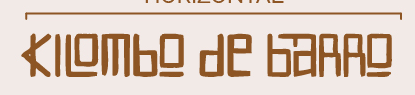

Infância e continuidade
As crianças também encontram no barro uma forma de experimentar, aprender e criar.

Entre mãos, gerações e território, transformamos a cerâmica em encontro, criação e continuidade.
O Kilombo de Barro é fruto da Comunidade Quilombo da Aldeia. Reúne pessoas de diferentes idades em torno da cerâmica como expressão de identidade, memória e força coletiva.
Cada encontro valoriza o que aprendemos uns com os outros. Na relação com o barro, fortalecemos saberes, vínculos e a história do nosso território.

O que nossas mãos criam também conta a história de quem somos.
As crianças também encontram no barro uma forma de experimentar, aprender e criar.

O aprendizado acontece na prática, na troca e no tempo dedicado a cada peça.

Modelagem, acabamento e queima fazem parte de um processo coletivo de criação.
Rostos, mãos, encontros e peças que dão forma ao nosso caminho.


Garopaba, Santa Catarina. A cerâmica como caminho de encontro, memória, ancestralidade e valorização dos saberes da comunidade.